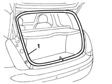
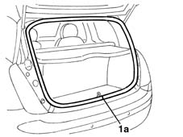

7015A30 tailgate compartment seal - r+r
- Path
- Procedures > 70 FITTINGS > 7015 TAILGATE/ > 7015A tailgate assembly > 7015A30 tailgate compartment seal - r+r
- Kind
- repair procedure (removal / refitting; the operation number is the code)
- Applies to
- all engines; all production periods
- Interactive page
- https://sloeber94.github.io/elrnDB-lYpsln/en/#/2429534
Applies to: all engines; all production periods
 Removing
Removing
 Refitting
Refitting7040B22 luggage compartment/load platform moulding - r+r
1. Release the seal and remove it.

Applies to: all engines; all production periods
Refitting
RemovingCheck that the seal is intact and shows no signs of damage.
Place the seal in position so that the join (1a) is in the centre at the bottom.

Applies to: all engines; all production periods
Check the contact between the seal and the tailgate.